未確定事項と判断してほしい点
ここに挙げた3点だけが判断の要る点です。ほかの節は決定済みの情報です。各項目から本文の該当箇所へ移れます。本文には同じ番号の「要判断 n」の印があります。
- 1
- 2
- 3ナレーション音声を、今回生成するか A：原稿と、声を置く設計まで。音声ファイルは作らない（この企画書はAPI生成の許可ではない）。B：明示の依頼として、Gemini または ElevenLabs でこの原稿を生成する。使えるキーがあるときだけ。モデルIDと料金は実行時に確認する。→ 声・文字・素材の分担／音
この動画で伝える一文
「AIで作った絵が気持ち悪いのはAIのせいだ」と思っている人に、不自然さはゼロからすべてを生成させていることから来ると伝え、手元の70を80〜90へ引き上げる相棒として向き合い、最後の判断と責任は人が持つ、という本人の結論を残す。
残る気持ちは、丁寧に使えばAIは高く返す、という本人の確信です。全員の制作がこれで成功する、という話にはしません。0、70、80、90、100は、どこまで委ねるかの言い方で、品質の測定値ではありません。
視聴者
メニューやポスターをAIに任せ、仕上がりを「なんか気持ち悪い」と言われた人。原因をAIの性能だと思っている人。手元の実物をどこまで渡し、どこから自分で見るかを、自分の頼み方として持って帰れる人。
構成と尺
Fable 5.2には、企画の意図を汲み、表現を改善して仕上げる裁量を渡します。
以下のカット表、絵コンテ、文言、配色は、制作に着手できる具体的な構成案です。記事の主張をより明快に、映像をより魅力的に伝えられるなら、構成案を超えて改善してください。企画書との見た目の一致は合格条件にしません。
- 守ること：手元の70を80〜90へ引き上げる相棒であり、最後の判断と責任は人が持つ、という主張。原稿の根拠と留保。本人の結論。文字中心の表現。読む間も続く大きな画面運動。可読性。最後のロゴ仕様。
- 今回の決定：写真も生成動画も使わず、線画のモーショングラフィックスで作る。グラスが出るカットは同じ線画。他者の画像は出さず、09は要旨と出典の一行。製品のUIとロゴ、実在の人物は描かない。「短縮自体は、悪くない。」は画面に残す。結びは「相棒として。」と「責任は、人が持つ。」
- 変更してよいこと：本編のカット数、順序、尺、上記以外の文言の要約と改行、図形の形と配置、字組み、配色、カメラ、動きの種類と速度とつなぎ、実装技術。2分01.5秒、7字/秒、寄り2秒は参考値です。留保を消したり、個人の経験を全員への保証に広げたりしません。
- 進め方：この範囲の改善は逐一の承認を待たず、理由を短く記録して実装と検証まで進めます。変更したカット表と文言は、この企画書とreferences.mdの対応へ反映します。絵コンテは参考案として扱い、配置や動きの判断が変わる場面だけ更新します。外部素材の追加、音声生成、公開の承認条件は別に守ります。
声は経緯、留保、結論を運びます。文字は決め語です。図は「0から100は折れる」「70から90は伸びる」「90から100は人の手」を運びます。説明の全文は画面に載せません。ナレーションありで尺を設計しています。この企画書は、APIで音声を生成する許可ではありません。
| カット | 区間 | この区間で伝えること | 声／画面 |
|---|---|---|---|
| 01 なんか、気持ち悪い。 | 0:00.0–0:06.0（6秒） | 気持ち悪さの正体は、まだ分からない。任せる幅を問う | 34字／19字 |
| 02 0から100は、崩れる。 | 0:06.0–0:14.0（8秒） | ゼロからすべてを生成させると、線が折れる | 39字／12字 |
| 03 70から、90へ。 | 0:14.0–0:21.5（7.5秒） | 実物を土台にすると、形は崩れず、光が足される | 37字／9字 |
| 04 濃淡。 | 0:21.5–0:33.0（11.5秒） | 70を90へ上げるか、残りを自分で直すか。どちらも濃淡 | 51字／16字 |
| 05 嘘が、混ざる。 | 0:33.0–0:45.0（12秒） | 元がなければ生成する。ゼロからだと、頼んでいないことが混ざる | 62字／13字 |
| 06 楽か、質か。 | 0:45.0–0:50.5（5.5秒） | 楽をするためと、質を突き詰めるためは、違う | 29字／17字 |
| 07 隅は、残る。 | 0:50.5–1:00.0（9.5秒） | 任せきりでは届かない。仕上げに手をかける | 45字／13字 |
| 08 AIのせい、ではない。 | 1:00.0–1:10.5（10.5秒） | 出した判断は人のもの。短縮自体は悪くない | 50字／31字 |
| 09 氷まで、同じ緑。 | 1:10.5–1:20.0（9.5秒） | 報じられたフロートの要旨。画像は出さない | 59字／32字 |
| 10 離れていく。 | 1:20.0–1:34.0（14秒） | 厳しすぎる反応もある。それでも手抜きと受け取られれば離れる | 70字／46字 |
| 11 そこに、行った価値。 | 1:34.0–1:41.0（7秒） | 現地で切った思い出は、置き換えても意味がない | 39字／10字 |
| 12 相棒として。 | 1:41.0–1:56.0（15秒） | 人の手が空きにはまる。相棒として向き合い、責任は人が持つ | 74字／26字 |
| 13 エンドロゴ | 1:56.0–2:01.5（5.5秒） | 制作表示 | 0字／0字 |
尺の算出：各カットのナレーション案の字数（空白と改行を除く。句読点は含む）÷ 7字/秒 ＋ 文の数 × 1秒。0.5秒単位に切り上げ。絵を見せる下限は、02の折れ7秒、03の伸び7秒、12の寄り8秒。ロゴは動作4秒＋完成形の保持1.5秒。7字/秒は、この企画のネタ案と、画面の読了の目安です。過去の実測では読み上げが約5.5字/秒だったので、声が遅ければ速度を上げず、家電のたとえや「ダサい」の周辺から削ります。留保は残します。3分には伸ばしません。等速での読了と観察は、制作側の試作で確かめます。実速再生は未確認です。
カット表・絵コンテ
各カットに「はじめ」と「おわり」の2コマがあります。コマ画は構図のラフ（1280×720、明るい紙色）で、完成画ではありません。番号と「はじめ／おわり」は、このページの見出しとキャプションにだけあり、画像の中にはありません。秒数、位置、大きさは参考値です。実装の手順とパラメータは制作側の裁量です。画面全体を大きく動かすこと、可読性、留保は緩めません。カメラの名前はカメラワークと切り替えの名前、動きの用語は動きの言語、記号の意味は記号と色を参照します。章表示、テロップ帯、エンドクレジットは入れません。
動きの軸は、画面を横切る一本の目盛りです。0から100へ走る矢印は途中で折れ、グラスの線も波打ちます。70から90へ伸びる矢印は滑らかに光り、グラスは形を保ったまま色と光が足されます。最後に、90から100の空きへ「人の手」がはまります。
なんか、気持ち悪い。
0:00.0–0:06.0 / 6秒 ・ 問い ・ 声 34字／画面 19字

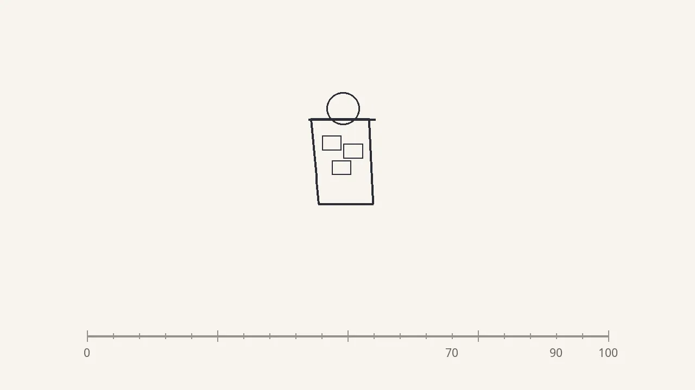

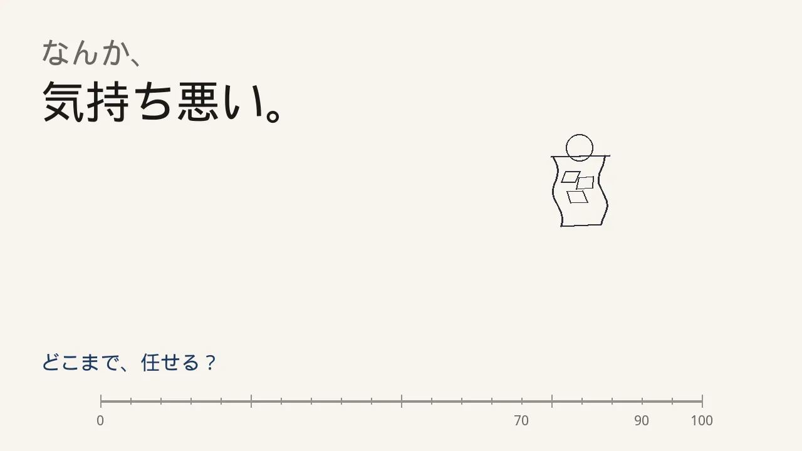
なんか、
気持ち悪い。
どこまで、任せる？
メニューの写真を見て、なんか気持ち悪い、と思ったことはありませんか。
「気持ち悪い。」を墨の特大で、グラスより上に置きます。「どこまで、任せる？」は目盛りのそばの小さい藍です。続きを見る理由は、気持ち悪さの正体がまだ出ていないことです。
はじめはグラスが中央で、余白が均等です。おわりは左上の横組み2行、グラスは右へ寄ります。重心は中央から左上へ移ります。
0から100は、崩れる。 要判断 2
0:06.0–0:14.0 / 8秒 ・ 原因 ・ 声 39字／画面 12字

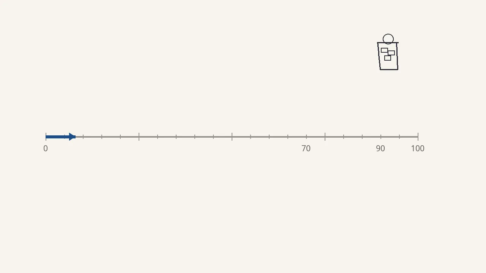

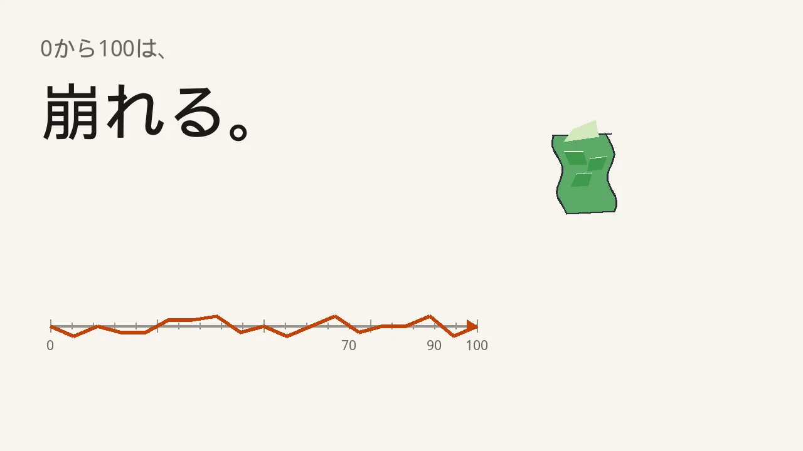
0から100は、
崩れる。
不自然さは、AIのせいではありません。ゼロからすべてを生成させているからです。
「崩れる。」を画面左の特大にします。0と100は目盛りの端の小さなラベルです。測定値ではなく、丸投げの幅です。
はじめは目盛りが中央の一本です。おわりは左に特大の語、右に崩れたグラス。重心は左の語です。01の「グラスが右、語が左上」から、語がさらに大きくなります。
70から、90へ。
0:14.0–0:21.5 / 7.5秒 ・ 根拠 ・ 声 37字／画面 9字

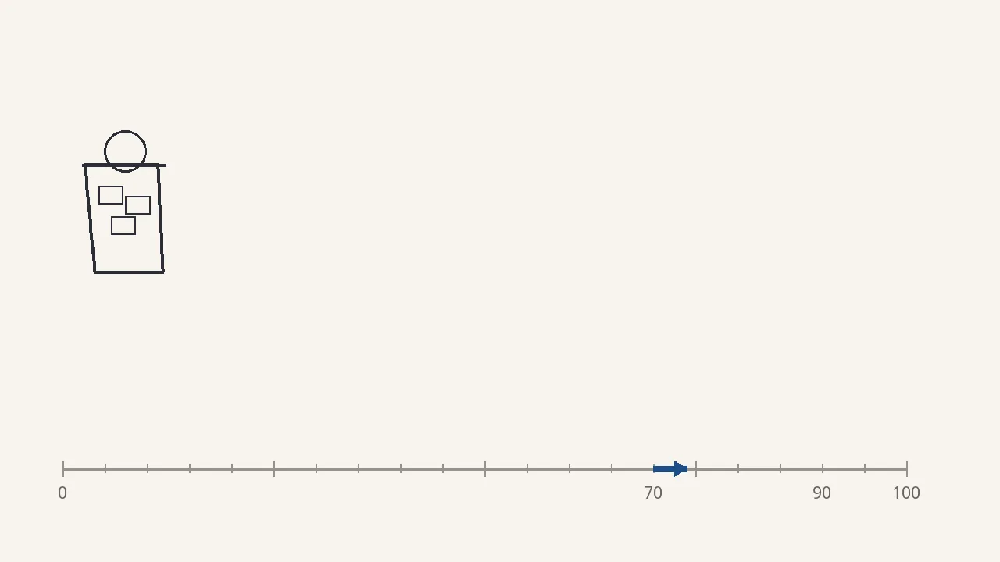

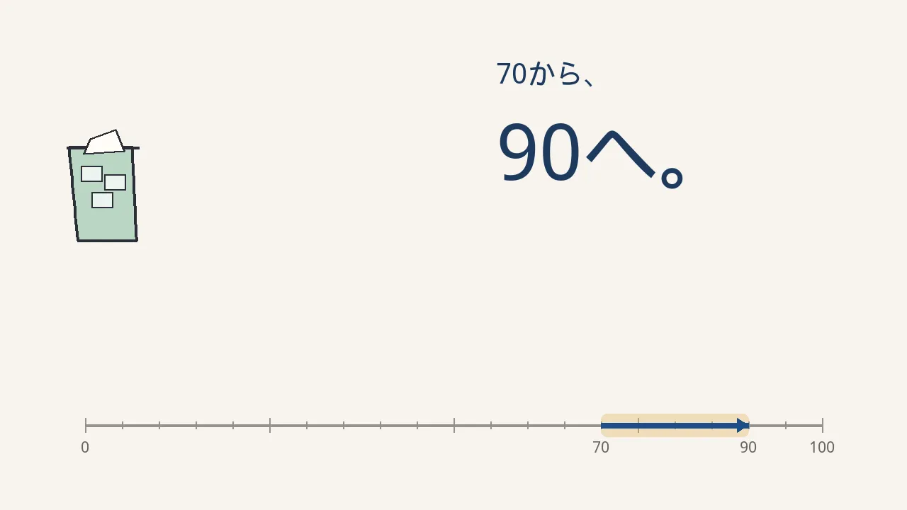
70から、
90へ。
プロは実物を撮って、光や形を足します。写真を渡せば、形は大きく崩れません。
「90へ。」を藍の特大にします。「70から、」は一段小さく、同じ藍です。数字は目盛りのラベルで、品質スコアではありません。
02と左右を入れ替えます。グラスは左で整い、文字は右の2行です。重心は右へ移ります。
濃淡。
0:21.5–0:33.0 / 11.5秒 ・ 対処 ・ 声 51字／画面 16字

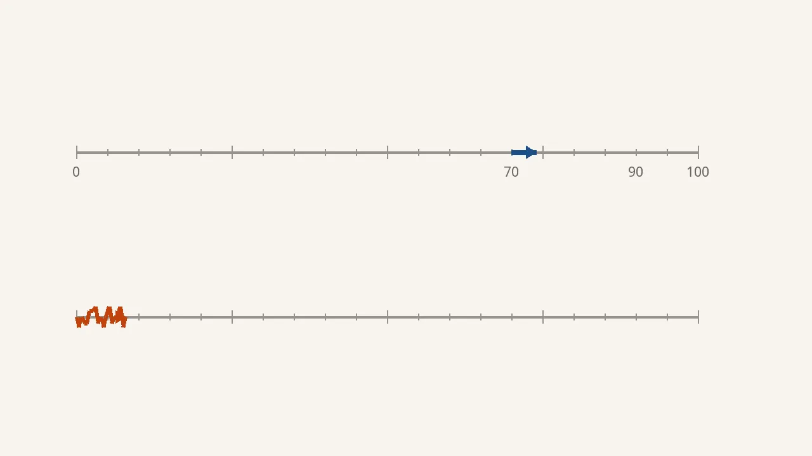

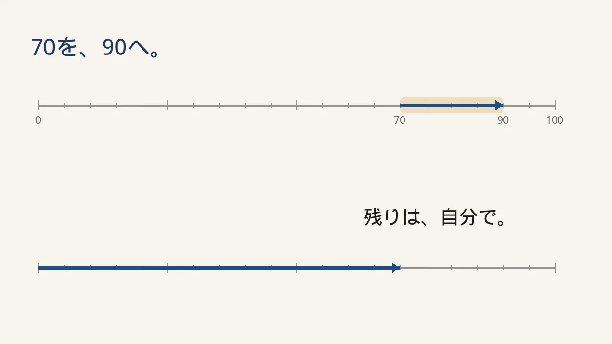
70を、90へ。
残りは、自分で。
0から100は丸投げしない。70を、80や90へ引き上げる。あるいは残りは、自分で直す。この濃淡です。
「残りは、自分で。」を下の空きの上に置きます。上の「70を、90へ。」は光の区間と同じ藍です。二通りは同じ濃淡で、どちらか一方だけを正解にしません。
一本だった目盛りが、縦に二本になります。03の「右に特大」から、上下の対に組みが変わります。語は各矢印の結果のそばに付きます。
- 0〜3秒：一本の目盛りが上下に分かれる。
- 3〜8秒：上は90まで滑らかに伸び、下は70で止まる。止まった先の空きが残る。
- 8〜11.5秒：二つの句が着地する。読む間、上の光は流れ、下の空きは開いたままです。空きを欠陥の点滅にはしません。
二本が分かれるあいだ、図の層を Tilt で少し起こす。
下の0の端から、05の四角の列が生える。
嘘が、混ざる。
0:33.0–0:45.0 / 12秒 ・ 留保と根拠 ・ 声 62字／画面 13字

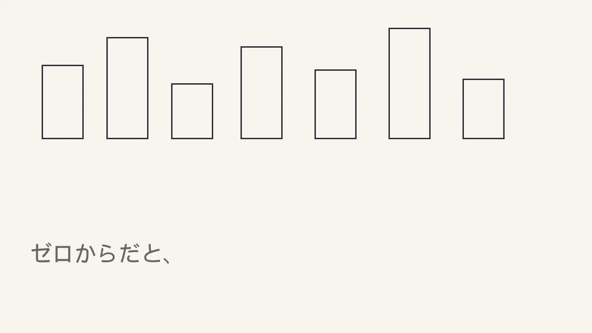

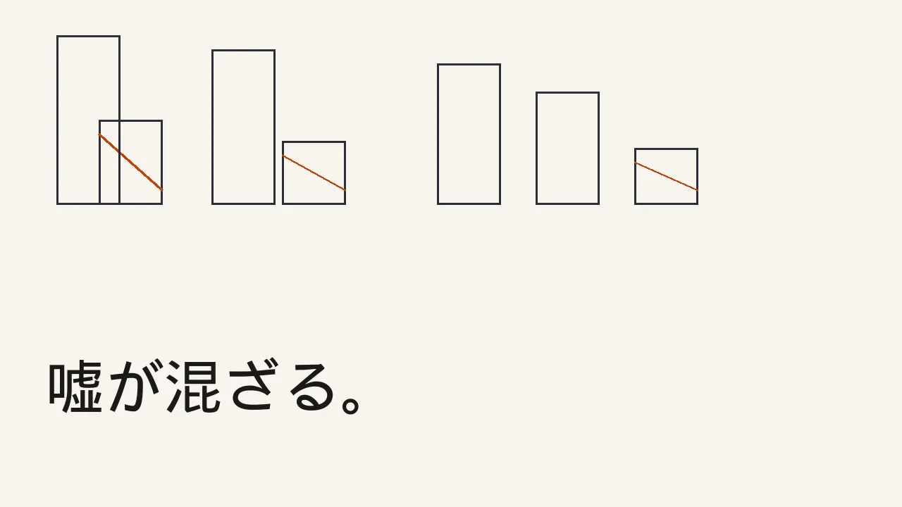
ゼロからだと、
嘘が混ざる。
元がなければ、生成するしかありません。頼んだことと、AIが足したことが混ざります。香港の並びも、すぐデタラメだと分かります。
「嘘が混ざる。」を墨の特大にします。四角は、並びが崩れる印です。実在の街の写真ではなく、画面に「香港」とも書きません。地名は声だけです。
はじめは四角が上部の水平、文字は左下の小さめです。おわりは四角が不規則に並び、文字は下段の特大です。重心は上から下へ移ります。04の横長の目盛りとは組みが違います。
- 0〜2秒：四角の輪郭が一本ずつ描かれる。
- 2〜8秒：四角が列の中で入れ替わり、隙間と重なりが出る。カメラは列に沿って Tracking shot（右へ）。
- 8〜12秒：特大の句が着地する。読む間、四角の列は流れる。文字の行は逆向きに、形を保ったまま左へ少し流す。
Tracking shot（右へ）。
流れた四角が画面の外へ出て、06は語だけになる。
楽か、質か。
0:45.0–0:50.5 / 5.5秒 ・ 対比 ・ 声 29字／画面 17字

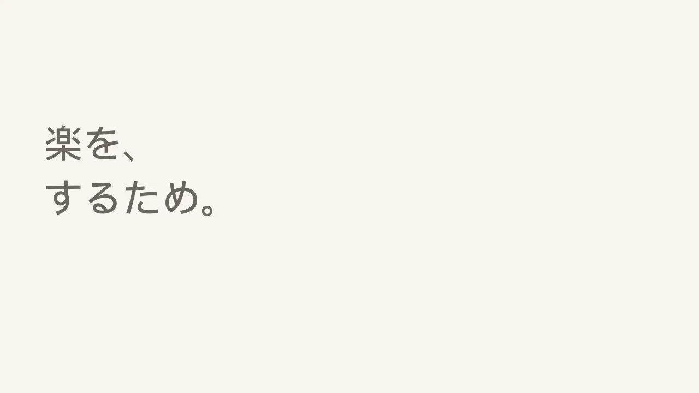

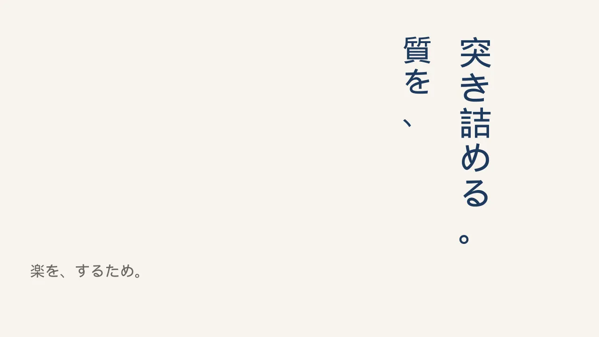
楽を、
するため。
質を、
突き詰める。
楽をするための使い方と、質を突き詰める使い方は、違います。
「突き詰める。」を縦組みの特大にします。楽の横組みと向きを変えて、質の側を大きくします。楽を悪の全部にはしません。短縮自体は悪くない、は08で残します。
はじめは左の横組みです。おわりは左下に小さな灰、右に縦組みです。05の下段の特大から、縦の柱へ重心が移ります。
- 0〜1.5秒：灰の2行が左から行マスクで入る。
- 1.5〜3.5秒：縦組みが上から降りて着地する。画面全体が右へ押し出される。
- 3.5〜5.5秒：縦の行は上へ、灰の行は下へ、向きを変えて流れる。止めない。
押し出しと同時に、図はまだ無く、文字の行と画面の面が動く。
縦の「質」の下端から、07の矩形が開く。
隅は、残る。
0:50.5–1:00.0 / 9.5秒 ・ 根拠 ・ 声 45字／画面 13字

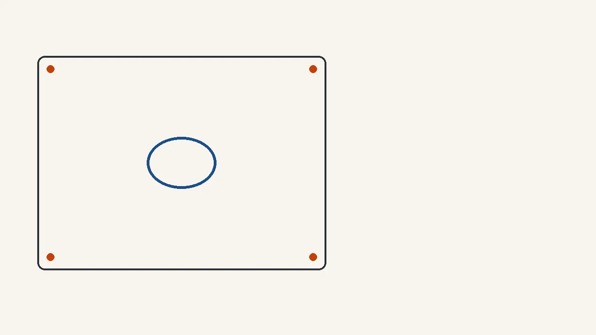

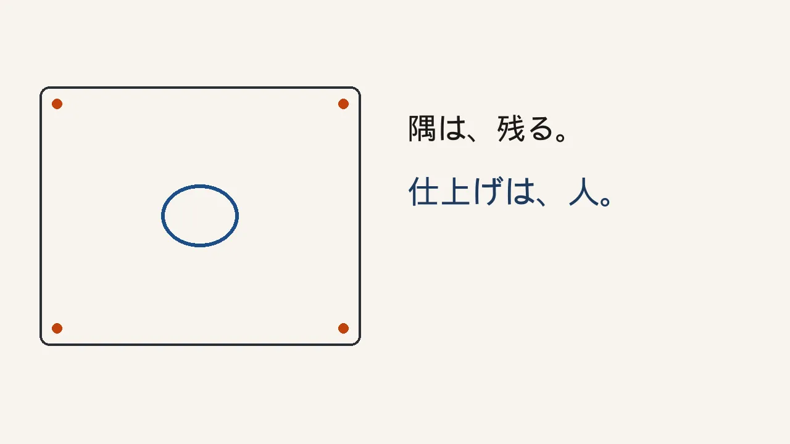
隅は、残る。
仕上げは、人。
任せきりでは、隅が残ります。仕上げに手をかけるから、おいしくなる。丸投げは、即席の味です。
「仕上げは、人。」を藍の大きくします。「隅は、残る。」は墨です。円は家電の製品絵ではありません。人の姿は描きません。
左に矩形、右に2行の柱です。02の「右にグラス」、03の「左にグラス」とも違います。
- 0〜3秒：矩形が開き、円が中を横切る。隅の点は消えない。
- 3〜6秒：「隅は、残る。」が着地する。円は周回を続けるが、隅には届かない。
- 6〜9.5秒：「仕上げは、人。」が下から行マスクで入る。読む間、カメラは Crane up で少し上がり、隅の点を見せ続ける。
Crane up（小さく）。
隅の点が、08の小さな札「もうこれでいいや」になる。
AIのせい、ではない。
1:00.0–1:10.5 / 10.5秒 ・ 主張 ・ 声 50字／画面 31字

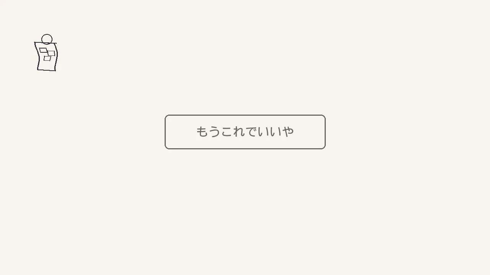

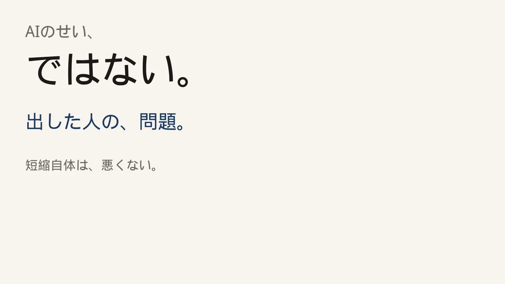
AIのせい、
ではない。
出した人の、問題。
短縮自体は、悪くない。
品質が低いのは、出してよいと判断した人の問題です。短縮自体は、悪くありません。言い訳は、一番ダサい。
「ではない。」を画面幅に近い特大にします。「ダサい」は声に残し、画面の主役にはしません。留保「悪くない。」は灰の一行で読めます。
はじめは中央の小さな札です。おわりは上段の特大、中段の藍、下段の灰です。07の左図・右文から、文字だけの三段へ変わります。
- 0〜2秒：札が中央に落ちて着地する。
- 2〜6秒：札が左右に割れて退き、「AIのせい、／ではない。」が行マスクで入る。割れるのは札で、文字の形は割らない。
- 6〜10.5秒：「出した人の、問題。」と灰の留保が入る。読む間、割れた札の破片は画面の端へ流れ続ける。
札が割れたあと、文字の三段が上から下へ順に着地する。カメラは図の破片を追って少し引く。
奥に残った小さなグラスが手前へ戻り、09で主画面になる。
氷まで、同じ緑。 要判断 1
1:10.5–1:20.0 / 9.5秒 ・ 要旨と出典 ・ 声 59字／画面 32字

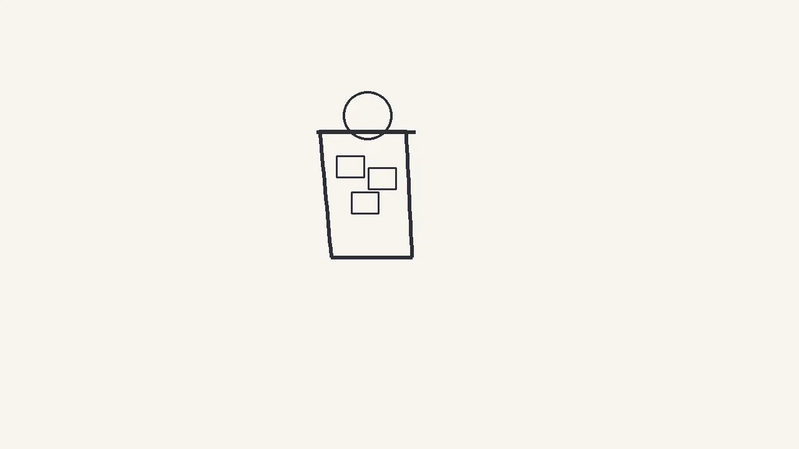

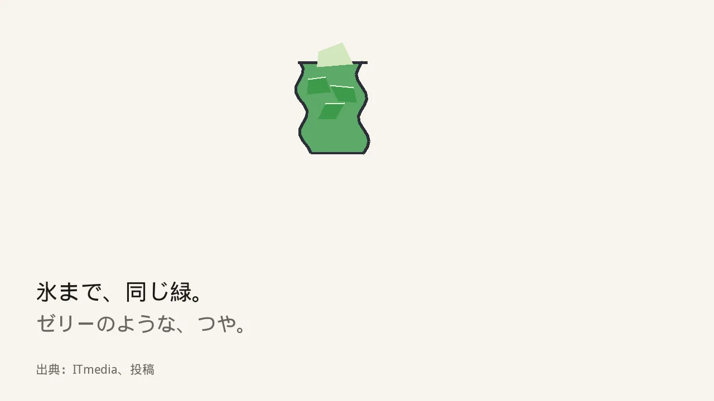
氷まで、同じ緑。
ゼリーのような、つや。
出典：ITmedia、投稿
日本ケンタッキー・フライド・チキンの一部店舗のフロートは、氷まで同じ緑で、ゼリーのようなつやだったと報じられています。
主役はグラスの変化です。文字は下段に譲ります。出典は読める最小の一行で、記事の本文も投稿の画像も出しません。ブランド名は声だけです。テロップ帯の地色は敷きません。
グラスが画面の上半分を占めます。文字は下の紙色に直接置きます。08の文字だけの三段から、図が主画面に戻ります。右上の小窓にはしません。
- 0〜2秒：08の奥のグラスが Dolly in で主画面になる。文字は一度退く。
- 2〜6秒：氷の四角へ緑が満ち、輪郭が波打つ。ハイライトが表面を滑る。
- 6〜9.5秒：下段の2行と出典の一行が入る。読む間、ハイライトは動き続ける。グラスの周りを小さく Orbit する。
Dolly in から、小さな Orbit。
緑が引いて、10で画面が引く。
離れていく。
1:20.0–1:34.0 / 14秒 ・ 留保 ・ 声 70字／画面 46字

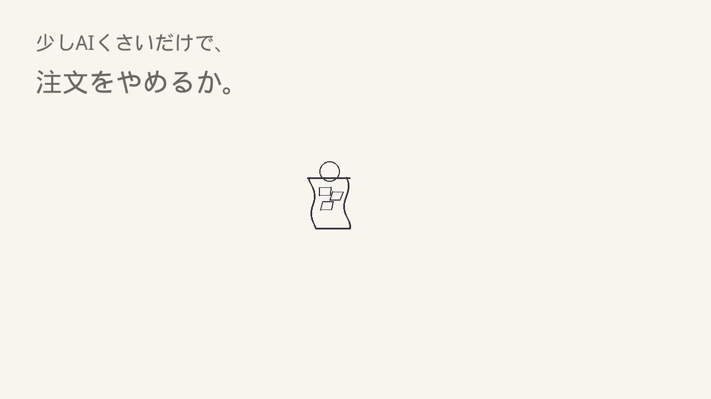

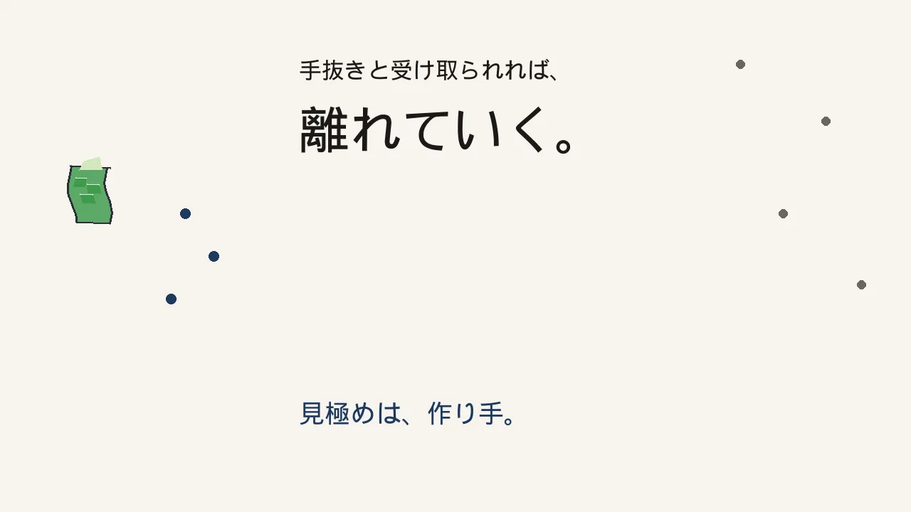
少しAIくさいだけで、
注文をやめるか。
手抜きと受け取られれば、
離れていく。
見極めは、作り手。
厳しすぎる反応もあります。少しAIくさくても、注文をやめるとは限りません。それでも手抜きなら、お客さんは離れます。見極めるのは、作り手です。
留保の問い「注文をやめるか。」は灰です。「離れていく。」は墨で一段大きくします。両論を同じ大きさにしません。点は客の姿ではありません。
09のグラス全面から、引いた構図です。上段が灰の問い、中央に小さなグラスと点、下段が藍の「見極めは、作り手。」です。
- 0〜3秒：Dolly out。グラスが小さくなり、灰の2行が入る。
- 3〜8秒：点が中央に集まり、一部が外へ流れる。読む間も点は止まらない。
- 8〜14秒：「離れていく。」と「見極めは、作り手。」が着地する。カメラは Pan（左へ）を小さく続ける。
Dolly out から、小さな Pan。
外へ流れた点の方向から、11の空の枠が入る。
そこに、行った価値。
1:34.0–1:41.0 / 7秒 ・ 留保 ・ 声 39字／画面 10字

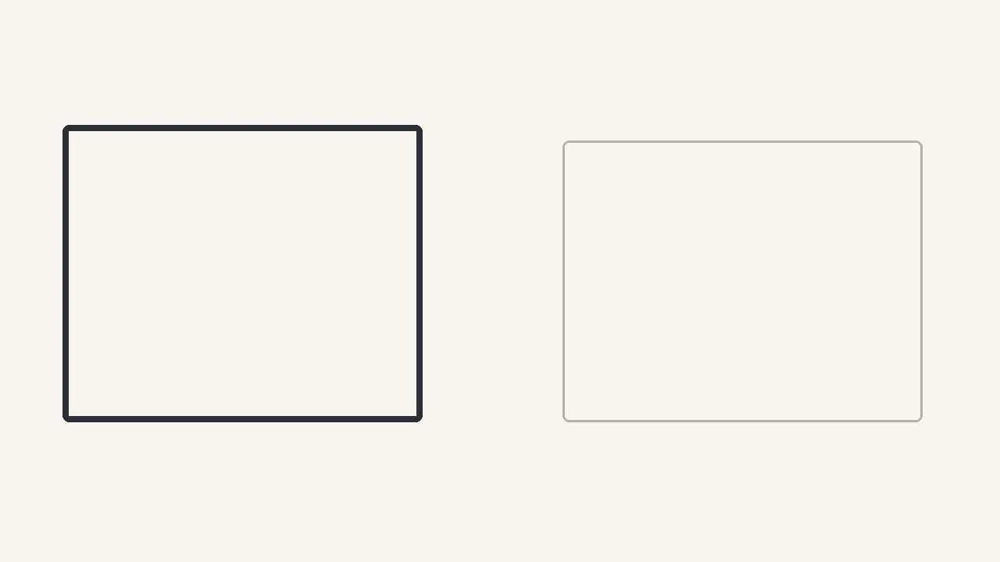

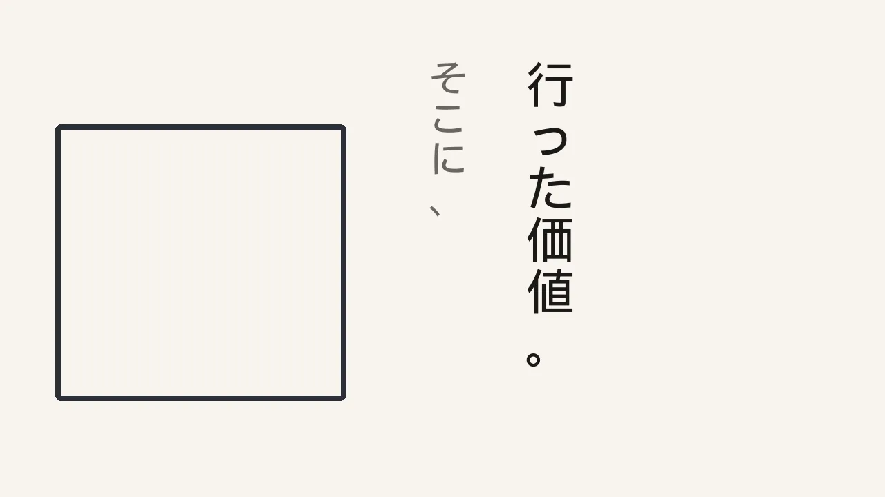
そこに、
行った価値。
現地で切った思い出は、他人の写真やAIの画像に置き換えても、意味がありません。
「行った価値。」を縦組みの特大にします。枠の中に写真は入れません。価値は、中身の画像ではなく、枠が残ることです。
左に枠、右に縦組みです。10の上段と下段の横組みから、06と同じ縦へ戻ります。06は質の縦、ここは思い出の縦で、語が違います。
- 0〜2秒：二つの枠が左右から合う。
- 2〜4.5秒：右の枠の線がほどけて散る。左は残る。
- 4.5〜7秒：縦組みが上から入る。散った線は画面の外へ流れ、左の枠は図の層だけ Dolly in で手前へ寄る。
残った枠へ Dolly in。
残った枠が横に倒れて、12の目盛りになる（Match cut）。
相棒として。
1:41.0–1:56.0 / 15秒 ・ 本人の結論 ・ 声 74字／画面 26字

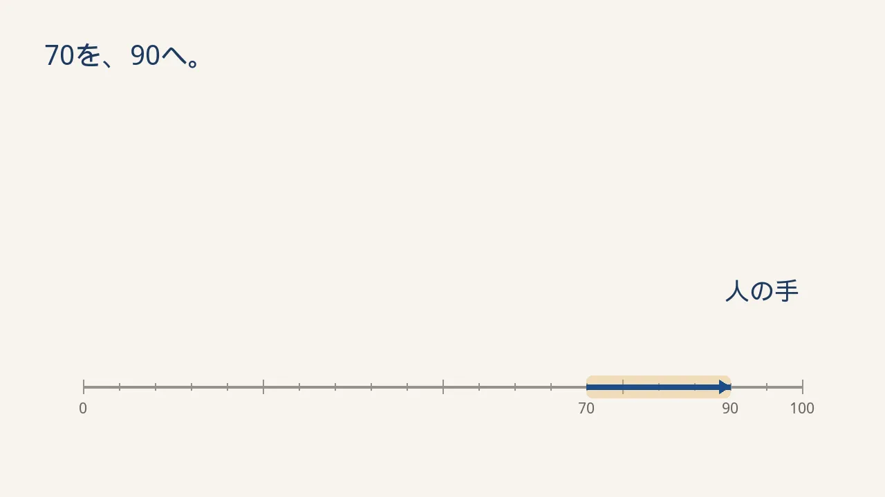

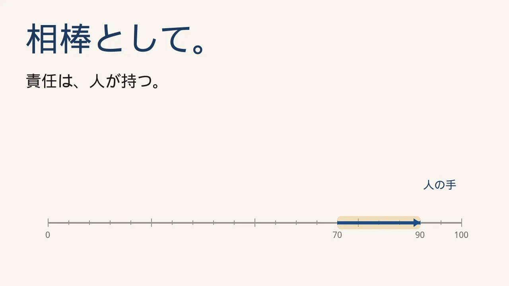
70を、90へ。
人の手
相棒として。
責任は、人が持つ。
私は実物とAIを分け、最後に人の手を入れます。丁寧に使えば、AIは高く返します。手元の70を、90へ引き上げる相棒です。最後の責任は、人が持ちます。
「相棒として。」を最も大きくします。01の「気持ち悪い。」、02の「崩れる。」と対になる言い切りです。「人の手」は90から100の空きにはまる語で、人の絵ではありません。責任の行は同じ画面に残し、視聴者への問いにはしません。
目盛りは下部の一本です。特大は左上です。03の「90へ。」よりさらに大きく、余白は右に残します。空きの上の「人の手」だけが、目盛りの右端に付きます。
- 0〜3秒：Match cut で枠が目盛りになる。70から90の光が戻る。
- 3〜8秒：「人の手」が空きへ落ちてはまる。はまったあと、図の層へ Dolly in 約2秒。
- 8〜15秒：「相棒として。」と「責任は、人が持つ。」が行マスクで入る。読む間も寄りが続き、光は70から90を流れる。文字は端で欠けない大きさで止める。
Dolly in。文字の層は、寄りで画面の外へ出さない。
寄った画面を左へ押し出して、ライムのロゴへ入る。
エンドロゴ
1:56.0–2:01.5 / 5.5秒 ・ 制作表示 ・ 声 0字／画面 0字

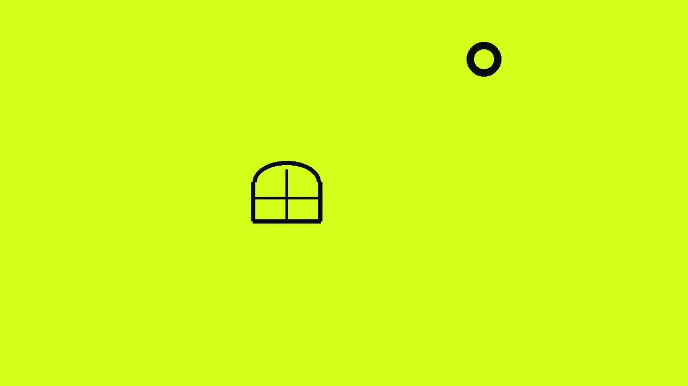

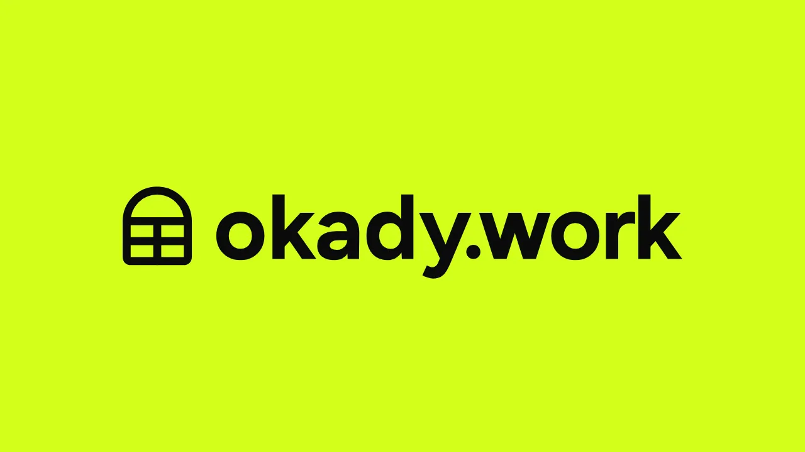
なし（ロゴのみ）
なし
リポジトリ直下の okady-work-logo.svg だけです。形、書体、色、比率は変えません。はじめのコマの印に、ロゴの形を合わせません。
背景は #d2ff1a の全面です。ロゴは引き伸ばさず中央に置き、本編の要素は重ねません。
SVGのタイミングを、フレーム時刻から再現します。0〜2.6秒で o が落ちてバウンドし定位置へ、2.6〜3.2秒で全体が左へ滑り、3.0〜4.0秒で「.work」が一文字ずつ出ます。そのあと完成形を1.5秒保持して終わります。本編からは、画面ごと左へ押し出して入ります。
ここで終わります。エンドクレジットは足しません。
詳細（ここから下は補足）
ここまでで、どんな動画で、どう組み、どう見えるかを示しました。以下は分担、デザインと動きの参考、素材、音、根拠、完成条件です。
声・文字・素材の分担 要判断 3
| 担当 | 受け持つこと | 受け持たないこと |
|---|---|---|
| 声 | 経緯、プロは実物を土台にするという方法、元がなければ生成するしかないという留保、香港の並び、楽と質、家電のたとえ、ダサいという判断、ブランド名、厳しすぎる反応と、それでも離れること、思い出、本人の結び。 | 画面の語の読み上げそのもの。全文字幕。URLの読み上げ。製品の画面の説明。 |
| 文字 | 決め語。留保の短い句（「短縮自体は、悪くない。」「注文をやめるか。」「見極めは、作り手。」）。出典の一行。 | ナレーションの全文。原稿にない数字。「ダサい」を画面の主役にすること。 |
| 図（目盛り、グラス、四角、矩形、枠） | 0から100は折れること、70から90は伸びること、空きは人の手であること、並びが崩れること、隅が残ること。 | 説明の文。製品の画面。人の姿。他者の写真。 |
| 画像・動画ファイル | 使わない。要判断1と2がAの前提。 | メニュー写真、投稿、記事の紙面、生成動画。 |
声ありで文量と尺を組んでいます。画面に声の全文は足しません。ナレーションの有無を変えると、画面の文量と尺を組み直す必要があります。音声ファイルの生成は要判断3です。Aのままなら、原稿と同期の設計までで、ファイルは作りません。
主張・根拠・留保の対応
| 役割 | 内容 | カット |
|---|---|---|
| 主張 | 不自然さはAIのせいではない。ゼロからすべてを生成させていることが原因で、最後の判断と責任は人が持つ。 | 02、08、12 |
| 根拠 | 実物を土台にすれば形は大きく崩れない。70を90へ上げるか、残りを自分で直す。任せきりでは隅が残る。報じられたフロートは、氷まで同じ緑だった。 | 03、04、07、09 |
| 留保 | 元がなければ生成するしかない。頼んだことと足したことが混ざる。楽のための使い方と質のための使い方は違う。短縮自体は悪くない。反応が厳しすぎることもある。少しAIくさくても注文をやめるとは限らない。それでも手抜きと受け取られれば客は離れる。見極めは作り手。思い出は置き換えられない。 | 05、06、08の灰の一行、10、11。声にも残す |
| 最後に残す本人の結論 | 丁寧に使えばAIは高く返す。手元の70を90へ引き上げる相棒として向き合う。最後の責任は人が持つ。 | 12 |
冒頭は01「なんか、気持ち悪い。」、主張の核は02「崩れる。」と03「90へ。」、結びは12の「相棒として。／責任は、人が持つ。」です。01と12を続けて読むと、任せる幅の問いが、70から90と人の責任へ着きます。原稿との文言の対応はreferences.mdにあります。
企画側／制作側
| 企画側が渡すもの | 制作側が判断・制作するもの |
|---|---|
| 主張と留保、構成・尺・文言の参考案、ナレーション案、絵コンテ26枚、字組みと色の参考案、動きの狙い、効果の参考（effects-direction.md）、ロゴへの参照、根拠の対応（references.md） | 本編の再構成、文言の整理、字組み・配色・動きの改善、技術選定、実装、検査、プレビュー。BGMと効果音は後工程 |
| 画像・動画の採用ファイルはなし。生成動画とフロートのイラストは不採用で、生成していない | 不足する画像・動画が出たら、作らずに企画側へ返す |
| 絵コンテ上の文字について、安全域（左右48px・上下40px）と、文字どうし・文字と図の重なりを検査済み（下記） | 本編の機械検査。全カットを約0.25秒ごとに、文字の外接矩形が安全域の外へ出ていないか、図と重なっていないかを見る |
| ナレーションの原稿と、声は経緯・文字は決め語という分担 | 声の選定と生成。要判断3がBになり、使えるAPIキーがあるときだけ。この企画書は生成の許可ではない |
企画と絵コンテの準備はここまでです。音声ファイルと本編の実装は制作側です。音源が無いことは、引き渡しを止める理由にしません。
Fable 5.2への依頼文
実装から検証までを1回で任せる依頼文はfable-brief.mdです。制作側の裁量は構成と尺にまとめています。この動画の画面と声に、制作に使うモデルの名前や性能は出しません。
図（目盛り、グラスの線、四角、矩形、枠）は three.js、文字は DOM を推奨します。画面全体の寄りと回り込みを図の層に掛け、文字をテクスチャにしないためです。使わない場合は、画面全体の動きと、文字と図の重なりを機械で見られることを、制作報告に短く書きます。
デザインシステム（映像の文字・色・グリッド）
これは本編の見た目の参考案です。色の値や組み合わせは調整できます。意味の区別と十分なコントラストを維持します。この企画書のページの色（青と橙の注意色）とは別です。本編でライムは、エンドロゴの背景だけに使います。
| 名前 | 値 | 使い道 |
|---|---|---|
| 紙 | #f7f4ee | 画面の地。暗い全面にはしない |
| 墨 | #1c1917 | 事実の語。崩れる、嘘、離れていく |
| 藍 | #1e3a5f | 筆者の決め語。90へ、質、仕上げ、相棒、責任 |
| 灰 | #6b6560 | 留保と、まだ決めていない問い |
| 折れ | #c2410c | 0から100のギザギザ。文字色にはしない |
| 伸び | #1d4e89 | 70から90の滑らかな矢印 |
| 光 | #e7b15a | 70から90の区間の光。文字色にはしない。ライムではない |
| 嘘の緑 | #3d9a4a | グラスの中だけ。氷まで同じ色、という印 |
| ライム | #d2ff1a | エンドロゴの背景だけ |
文字は DOM（または同等の層）で、詰め組と行のマスクが効く組み方にします。目盛り、グラス、四角、カメラは three.js を推奨します。カメラの寄りと移動は図の層に掛け、文字が図に埋もれたり、画面の端で欠けたりしないようにします。本編の安全域の目安は、1920×1080で左右80px、上下64pxです。
字組みはカットごとに変えています。
- 01は中央のグラスから、左上の横組みと右のグラスへ。
- 02は左の特大と、下の折れた目盛り、右の崩れたグラス。
- 03は左の整ったグラスと、右の特大。02と左右が逆です。
- 04は上下二本の目盛り。語は各結果のそば。
- 05は上の四角の列と、下段の特大。
- 06は左の横組みから、右の縦組みへ。
- 07は左の矩形と、右の2行。
- 08は中央の小さな札から、上中下の三段へ。
- 09はグラスが上半分、文字は下。帯は敷きません。
- 10は上の灰の問い、中央の点、下の藍。
- 11は左の空の枠と、右の縦組み。
- 12は左上の特大と、下の目盛り、右端の空きの「人の手」。
- 13はライムの中央にロゴだけ。
動きの言語
名前は狙いの共有です。本編の秒数、軌道、イージングの式は固定しません。ロゴだけは指定の動作とタイミングを再現します。読む間は、行、語の塊、目盛り、グラス、画面（カメラ）を動かします。文字の形そのものは崩しません。1字ずつの揺れ、拍ごとの脈動、意味のない粒子では「動いている」にしません。
| 名前 | 狙い |
|---|---|
| 走る | 0から100へ、一本の矢印が加速して横切る。丸投げの幅。 |
| 折れる | 走った線が途中でギザギザになる。グラスの輪郭も、同じ意味で波打つ。文字は折らない。 |
| 伸びる | 70から90へ、短い矢印が滑らかに進み、その区間が光る。 |
| はまる | 「人の手」の語が、90から100の空きへ落ちて収まる。 |
| 寄る | カメラが図の層へ近づく。01の入り、09の主画面、12の結び。文字の層は画面の外へ出さない。 |
| 回る | 図の層を小さく回り、グラスや目盛りの厚みを見せる。文字は回さない。 |
| 流す | 読む間に、行や四角の列を、向きを変えて動かす。 |
| 押し出す | 次のカットへ、語か画面を勢いのまま渡す。場面の境で止めない。 |
| 着地 | 決め語の塊が大きく出て、水平か縦に収まる。収まったあとも、列かカメラは動かし続ける。 |
実装は、Remotion上でフレーム時刻から同じ状態を再現できる形にします。文字はテクスチャにせず、DOMの層に置きます。カメラの名前はカメラワークと切り替えの名前に合わせ、寄るはドリーイン、02の加速はスピードランプ、03への渡りはホイップパン、11から12はマッチカットです。
効果の採否はeffects-direction.mdにあります。参考にするのは、語の塊の着地、層の速度差、線が順に描かれること、グラスの線だけを波打たせることです。採用数の上限ではありません。見本の暗い背景、章題、1字の揺れ、白フラッシュ、測定値に見えるグラフは使いません。
記号と色
同じ記号の意味と質感を、全カットで揃えます。図形の意匠は変えてかまいません。一つの記号に、別の意味を足しません。
| 記号 | 意味 | 出るカット | 混ぜないこと |
|---|---|---|---|
| 横長の目盛り | どこまでAIに委ねるか。0、70、80、90、100は原稿の言い方で、測定値ではない | 01、02、03、04、12 | 実績のグラフ、スコア、店の数 |
| ギザギザの長矢印 | 0から100の丸投げ。途中で折れる | 02、04のはじめの下 | 70から90の滑らかな矢印 |
| 滑らかな短矢印と光 | 70から90。手元の実物を土台に引き上げる | 03、04の上、12 | ギザギザ、ライム |
| 90から100の空き | 人の判断と責任が残る幅 | 04の下、12 | 欠陥の点滅、未完成のバツ |
| 「人の手」の語 | その空きを、人が持つ | 12 | 人の絵、手の写真 |
| 線画のグラス | メニュー写真のたとえ。全カット同じ線画。崩れる状態はゼロからの嘘、色と光が足されて形が残る状態は実物を土台にした引き上げ | 01、02、03、08、09、10 | 実物の写真、他者のイラスト、製品パッケージ |
| 緑に染まった四角 | 氷まで同じ色、という嘘。グラスの中だけ | 02、09、10 | 整った状態の色、ロゴのライム |
| 四角の列 | ゼロから作ると並びがデタラメになる | 05 | 実在の街の写真、地名のラベル |
| 矩形と中央の円、隅の点 | 任せきりでは届かないところ | 07 | 家電の製品、人の姿 |
| 灰の札 | 一発で出して、もうこれでいいや、とした印 | 08 | ロゴ、出典 |
| 点 | 離れゆく客のたとえ。姿ではない | 10 | 顔、ピクトの人 |
| 空の枠 | 現地で切った思い出。中に写真は入れない | 11 | 他人の写真、生成画像 |
| 出典の一行 | 他者の作品は、要旨と出典だけ | 09 | 画像、URL、記事の見出し |
| 藍の文字 | 筆者の決め語 | 01の問い、03、04、06、07、08の中段、10の見極め、12 | 留保 |
| 灰の文字 | 留保、またはまだ開いている問い | 01の「なんか、」、05の前置き、06の楽、08の悪くない、10の上段 | 決め語 |
| ライムの全面 | 制作表示 | 13だけ | 本編の強調色 |
キャラ設定
人物は出しません。メニューのたとえは線画のグラス、任せきりのたとえは矩形と円、客のたとえは点、人の判断は「人の手」という語です。原稿の「作り手」「お客」は、声と画面の語で残します。
差し替え候補 要判断 1 要判断 2
この企画書の前提はAです。グラスは01、02、03、08、09、10のすべてで同じ線画です。一部のカットだけ実写や生成動画にしません。
要判断1 原稿内のフロートのイラスト
- A：使わない。09は線画のグラスが緑に染まる変化で、要旨を見せる。
- B：使う。原稿の
2026-11-10_17-55-39.webpと2026-11-10_23-44-36.webpは、他者の実物写真が元です。許可が要ります。許可まではAで進めます。制作側は新たに画像を生成しません。
要判断2 グラスが歪む生成動画
- A：使わない。線の波打ちと、色が満ちる変化をモーショングラフィックスで描く。
- B：使う。未承認、未生成です。この企画書は、クレジット消費の承認ではありません。承認後に企画側が用意します。使うなら、グラスが出る全カットを同じ質感にします。
追加の写真や動画が必要だと判断した場合は、対象場面と役割を企画側に返し、依存しない部分の実装を進めます。制作側に新規の画像・動画生成を任せる条件にはしません。
素材
| ファイル | 用途 | 区間 |
|---|---|---|
assets/storyboard/cut-01-start.webp から cut-13-end.webp までの26枚 | 構図のラフ（1280×720、明るい背景）。完成画ではない | 各カットのはじめ／おわり |
リポジトリ直下の okady-work-logo.svg | エンドロゴ。形、色、比率は変えない。絵コンテのはじめの印は、ロゴの形の見本ではない | 本編終了後（動作4秒＋保持1.5秒） |
採用する写真・動画ファイルはありません。フロートのイラストも、生成動画も、未使用・未生成です。本編の図は、コードで描くモーショングラフィックスです。ロゴのファイルは、受け手の環境から相対パス ../okady-work-logo.svg で開きます。
音 要判断 3
BGMと効果音のファイルは、まだ作りません。条件は次のとおりで、制作側がこの作品用に作ります。過去の企画の曲は使いません。20261007の音源も使いません。
- トーンは、線が折れるときの緊張と、70から90が伸びるときの明快さです。失敗を責める暗い環境音にはしません。
- 拍が立ち、矢印の走り、折れ、伸び、語の着地を支えるリズムにします。テンポの数値は固定しません。遅い曲に合わせて映像の勢いを弱めません。
- 02の折れ、03の伸び、08の言い切り、12の「人の手」がはまるところでアクセントを置き、本人の結論でまとまり、ロゴの終わりで収めます。映像より短い音源を、余裕があるとは書きません。
- 短い無音や音を薄くする間は、01で気持ち悪さに気づく瞬間など、意味の転換に使えます。運動感を失う長い停止にはしません。
- 効果音は、折れ、伸び、着地、はまりを支える短い音を候補にします。種類をクリックだけに固定しません。製品の通知音は使いません。
- ナレーションは、各カットの原稿案を基に、意味と留保を保って整理できます。結びの「最後の責任は、人が持ちます。」は守ります。画面の全文を字幕にしません。声の生成は要判断3がBのときだけです。有料の音楽生成を比べる場合は、品質、時間、費用の理由を一行残して選びます。料金が未確認の有料生成はしません。
根拠
原稿の抜粋、画面文言、出典、画面にしない情報、数字が何の指標かはreferences.mdにまとめています。0、70、80、90、100、残りの30は、どこまで委ねるかの言い方です。品質スコアや件数は足していません。他者の画像、投稿の文面、記事本文は転載していません。
完成条件・確認状態
- 本編の動画、ナレーション音声、BGM、効果音は未制作です。このファイルは企画書です。
- 絵コンテ：26枚（1280×720、WebP）。各ファイルは1MiB未満です。文字の外接矩形が安全域（左右48px、上下40px）の外に出たもの、文字どうしの重なり、文字と図の重なりは0件でした。図として登録していない点は、10のおわりを目で見て、語に乗っていないことを確認しました。
- 実速再生は未確認です。静止画の検査は、躍動感、可読性の時間、ロゴのタイミング、音の合格ではありません。
- 章表示、テロップ帯、制作管理番号、エンドクレジット、白フラッシュ、粒子は、企画に入れていません。最後はライムの上のロゴだけです。
- 完成の条件は、主張が原稿を知らない視聴者に伝わること、留保が声か画面に残ること、結びが本人の肯定であること、文字が安全域に残ること、0から100の折れと70から90の伸びが等速で区別できることです。
凄さを体感できたかを確かめる観点
制作したあと、等速で見るための項目です。絵コンテの枚数や、検査が0件だったことは、この観点の合格にしません。
- 0から100の線が途中で折れ、70から90が滑らかに伸びる対比を、説明なしで区別できるか。「人の手」が90から100の空きにはまるのが、責任の絵として分かるか。
- 読む間も、目盛り、グラス、行、カメラが動き続けているか。文字の形は崩れていないか。1字の揺れや粒子で、動きを稼いでいないか。
- 冒頭の「なんか、気持ち悪い。」「どこまで、任せる？」と、結びの「相棒として。」「責任は、人が持つ。」だけで、同じ主張に着くか。
- 留保が残っているか。元がなければ生成するしかない。短縮自体は悪くない。反応が厳しすぎることもある。少しAIくさくても注文をやめるとは限らない。手抜きと受け取られれば離れる。思い出は置き換えられない。
- 他者の画像、製品のUI、ロゴ、実在の人物、章表示、テロップ帯、白フラッシュが無いこと。グラスの質感が、出るカットの途中で変わっていないこと。
- 企画書を改善した判断が、主張の明快さ、字組み、画面全体の動き、場面のつなぎにどう表れたか。代表区間を見てから全編へ広げたか。
- 自己検査で見つけて直した件数と、直したあとに同じ検査を通したか。実速の通しと試聴を、見ていないのに見たことにしていないか。
- 進捗の開始と完了。報告に、実行環境、使ったモデルの名前、Claude Codeのバージョンがあるか。残作業の一覧で止まらず、完成条件まで進んだか。